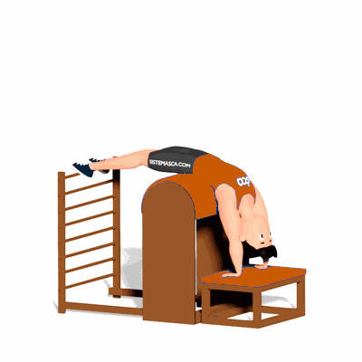

One Leg Up and Down

O exercício trabalha o fortalecimento dos músculos do abdômen e quadríceps, e o alongamento da coluna.
Ficha Técnica
Tipo: Pilates
Grupo Muscular: Abdome
Aparelho: Nenhum
Músculos: Nenhum
Como realizar
- Aluno em de cúbito dorsal, joelhos estendidos e os pés apoiados no espaldar, ombros flexionados com os cotovelos estendidos acima da cabeça. Utilize a caixa do Reformer para apoiar as mãos;
- Realizar a flexão de um quadril com o joelho em extensão;
- Retorne a posição inicial.
 RC STORE
RC STORE